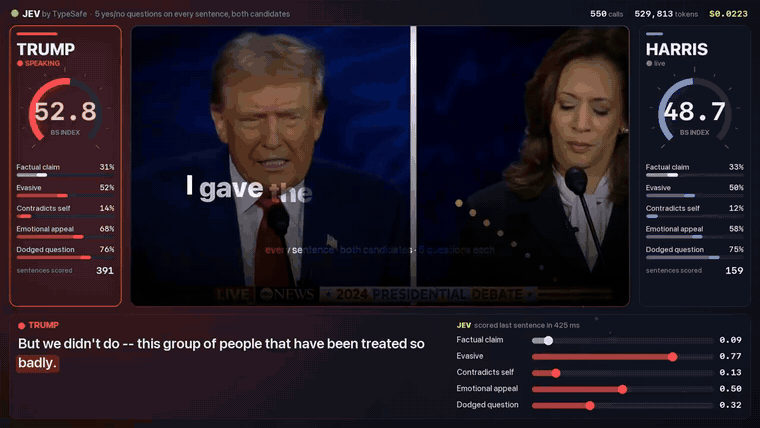

体験
逐次判断を時間軸と同期し、変化をメーターで見せる。速さが可視表現に直結している。
キャプチャ

見る箇所入力、判断結果の表現、判断後にユーザーまたはシステムが取る操作
入力から画面の変化まで
-
判断への入力
動画の文字起こし文と、評価したい観点。
-
Jevの判断
各発言が観点にどの程度該当するかをスコアまたは確率で判断する。
-
結果がUIをどう変えるか
動画再生に同期して左右のゲージ、ハイライト、ラベルを重ねる。
- 判断型の見立て
- Score / Noul推定
- 原文は「スコアまたは確率で判断する」としており、ScoreかNoulかは特定されていない。
Jevとの適合
条件付き。観測可能な言語特徴の評価には向くが、真偽判定や人物評価として見せると誤解と人格評価のリスクが高い。画面上で「事実検証ではない」と明示すべき。
確認範囲と未確認事項
公開リポジトリとREADMEのGIFを確認。評価妥当性は未検証。
- 確認済み上記出典で見える画面、投稿・READMEに明記された用途
- 未検証実際の精度、速度、継続利用時の挙動、公開コードをローカル実行した結果
- 推定扱いソースで質問型やプロンプトが公開されていない箇所